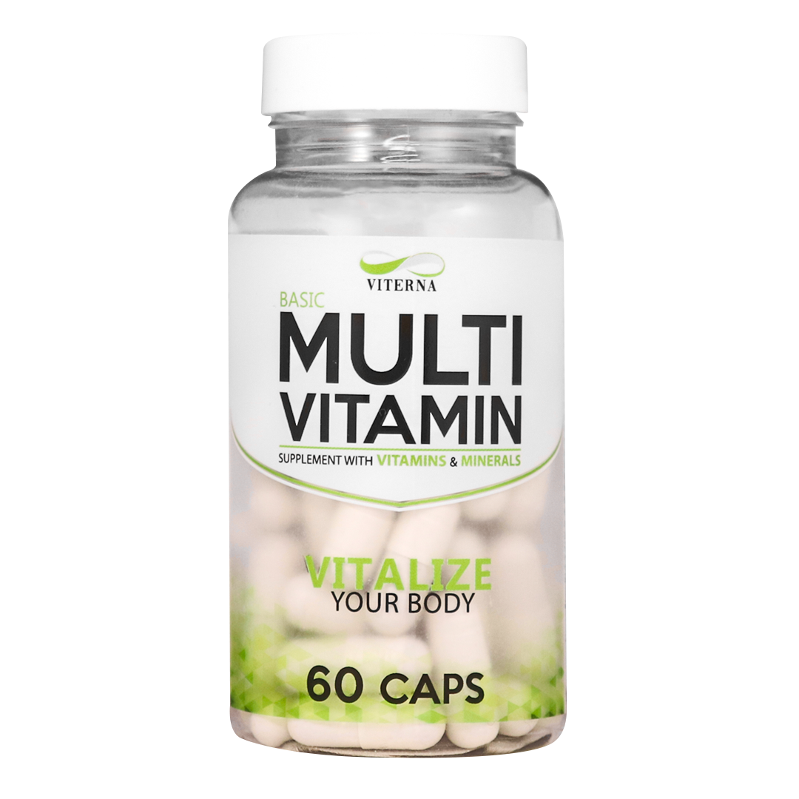
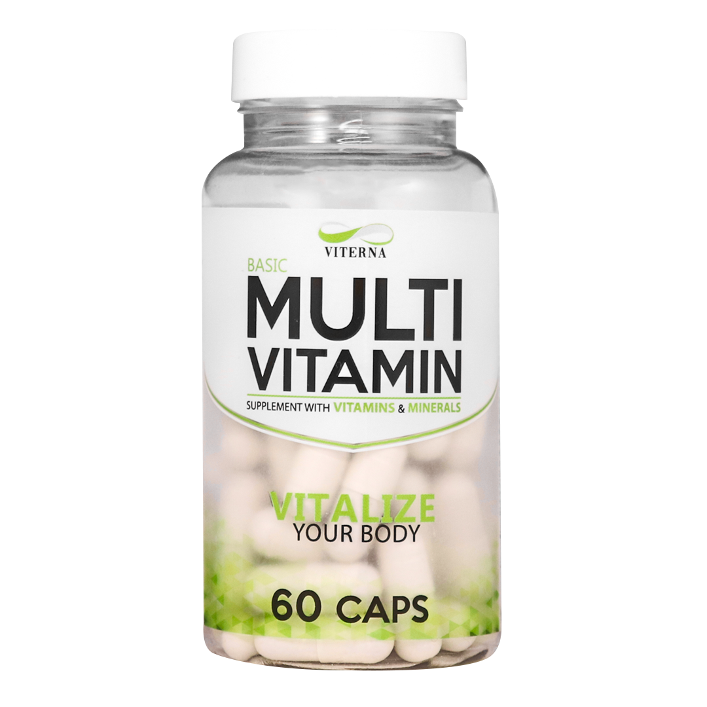

Proteins are important for the human body because they perform a wide
range of functions, including:
• Structural support: Proteins are a major component of tissues
such as skin, hair, and muscles, and they help to provide structural
support to the body.
• Enzymatic function: Many proteins function as enzymes,
catalyzing chemical reactions in the body. Enzymes are responsible for
many important processes in the body, such as digestion, metabolism, and
chemical signaling.
• Transport and storage: Proteins such as hemoglobin and
transferrin help to transport molecules such as oxygen and iron
throughout the body. Other proteins, such as lactoglobulin and
lactalbumin, are important for storing nutrients in the body.
• Immune function: Proteins called antibodies are important for
the immune system's ability to identify and neutralize foreign
substances, such as bacteria and viruses.
• Hormonal regulation: Many hormones, such as insulin and growth
hormone, are proteins and play a crucial role in regulating various
bodily processes.
• Movement: Proteins such as myosin and actin are responsible for
muscle contraction and movement.
In summary, proteins are important for the human body because they are
involved in a wide range of functions that are essential for maintaining
health and proper physiological functioning.
How does protein help you build muscles?
Proteins are essential for muscle growth and repair. When you engage in physical activity, such as weightlifting or resistance training, you create small tears in your muscle fibers. In order to repair and grow stronger, your body needs an adequate supply of protein to build new muscle tissue.
Protein is made up of smaller units called amino acids, which are the building blocks of muscle tissue. When you consume protein, your body breaks it down into these individual amino acids and uses them to synthesize new muscle proteins.
In order to build muscle, it's important to consume enough protein in your diet to support muscle protein synthesis. The amount of protein you need will depend on a variety of factors, such as your age, sex, weight, and activity level. In general, it's recommended that adults aim for 0.8-1.2 grams of protein per kilogram of body weight per day. However, if you're actively trying to build muscle, you may need to consume slightly more protein to support muscle growth. It's also important to choose high-quality protein sources, such as lean meats, dairy products, beans, and nuts, which contain all of the essential amino acids your body needs.
What different types of Protein are there?
There are several types of protein, including:
• Animal proteins: These are proteins that come from animal sources, such as meat, poultry, fish, eggs, and dairy products. Animal proteins are considered "complete" because they contain all nine essential amino acids.
• Plant proteins: These are proteins that come from plant sources, such as legumes, grains, nuts, and seeds. Some plant proteins, such as soy and quinoa, are considered "complete" because they contain all nine essential amino acids. Others, such as beans and rice, are considered "incomplete" because they are missing one or more of the essential amino acids.
• Whey protein: This is a type of protein that is found in dairy products and is particularly high in the amino acid leucine. It is commonly used by athletes and bodybuilders to help build muscle mass and improve athletic performance.
• Casein protein: This is another type of protein that is found in dairy products and is absorbed more slowly than whey protein. It is often used as a supplement to help maintain muscle mass and support recovery.
• Egg protein: This is a high-quality protein that is derived from eggs and is often used as a supplement by bodybuilders and athletes.
• Pea protein: This is a plant-based protein that is made from peas and is often used as a vegan alternative to animal-based proteins.
• Hemp protein: This is a plant-based protein that is made from hemp seeds and is considered a "complete" protein because it contains all nine essential amino acids.
• It is important to consume a variety of proteins to ensure that you are getting all of the essential amino acids your body needs.